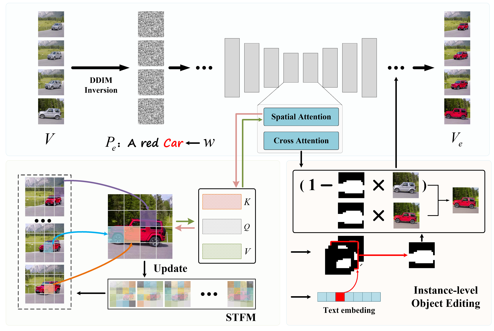

Remember efficiently
SFM stores a representative pool of feature tokens under a fixed memory budget. Diversity-based updates keep the pool useful as the video progresses.
Zero-shot · Text-guided video editing
Efficient Video Editing via
Feature Most-Similar Propagation
School of Artificial Intelligence, Xidian University
Key Laboratory of Intelligent Perception and Image Understanding of Ministry of Education
* Corresponding authors
Edit the objects you care about.
Preserve the motion and the world around them.
Text-driven edits. Consistent across frames.
Download videoThe idea
Video editing with text-to-image diffusion models often comes with high computational and memory costs, while feature smoothing can introduce blurring and temporal artifacts. Edit-Your-Interest is a lightweight, text-driven, zero-shot method designed to balance efficiency and visual fidelity.
A Spatio-Temporal Feature Memory bank (SFM) caches representative spatial-attention features under a fixed memory budget. Feature Most-Similar Propagation (FMP) retrieves relevant cached tokens for the current frame, while a feature-diversity-based update keeps the memory representative. Automatically extracted cross-attention masks support precise object edits and preserve the surrounding background.
02 / Method
Cache representative features. Retrieve what matters.
Keep the edit focused.

SFM stores a representative pool of feature tokens under a fixed memory budget. Diversity-based updates keep the pool useful as the video progresses.
FMP retrieves the most similar cached features for the current frame, improving temporal consistency without full-sequence temporal attention.
Cross-attention maps automatically provide object masks. Injecting these masks during denoising helps preserve the background and suppress boundary artifacts.
03 / Results
Explore the original and edited videos side by side.
Use “Play pair” to compare them together.
04 / Citation
@article{zuo2025edit,
title={Edit-your-interest: Efficient video editing via feature most-similar propagation},
author={Zuo, Yi and Wang, Zitao and Li, Lingling and Liu, Xu and Liu, Fang and Jiao, Licheng},
journal={arXiv preprint arXiv:2510.13084},
year={2025}
}